In the event of needing plots that have LCBC branding for presentations, reports etc. we have custom ggplot2 themes and colour scales to ensure that we have consistent branding. These are particularly suitable when using the rmarkdown-templates that also accompany this package.
Applying the LCBC themes to ggplot
The themes are quite minimal, applying mostly just the corrent font and colours to match out branding.
library(noasr)
library(ggplot2)
library(dplyr)
#>
#> Attaching package: 'dplyr'
#> The following objects are masked from 'package:stats':
#>
#> filter, lag
#> The following objects are masked from 'package:base':
#>
#> intersect, setdiff, setequal, union
p <- mtcars %>%
ggplot(aes(x = wt, y = disp, colour = cyl)) +
geom_point() +
labs(title = "LCBC themes",
subtitle = "of various kinds")
p +
theme_lcbc()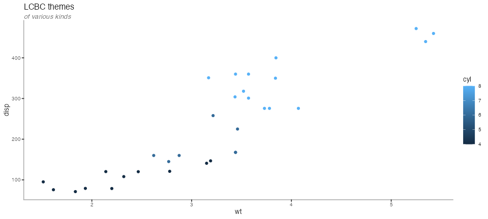
There are variations around the main theme, to adapt to various possible scenarios and tastes, while maintaing a certain aesthetic
p + theme_lcbc_grid()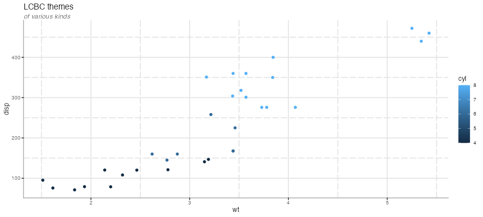
p + theme_lcbc_dark()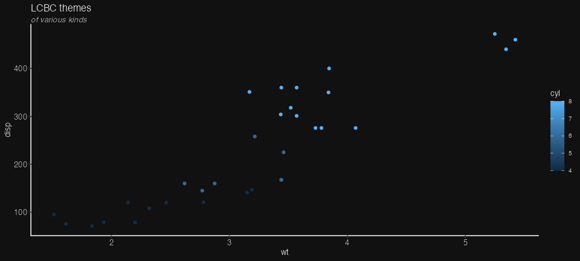
p + theme_lcbc_void()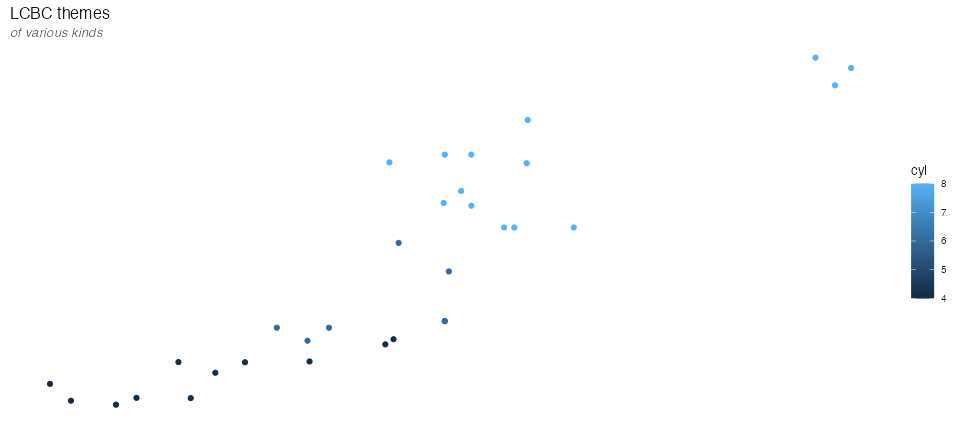
and there are also some pre-defined combinations of the above also.
p + theme_lcbc_dark_grid()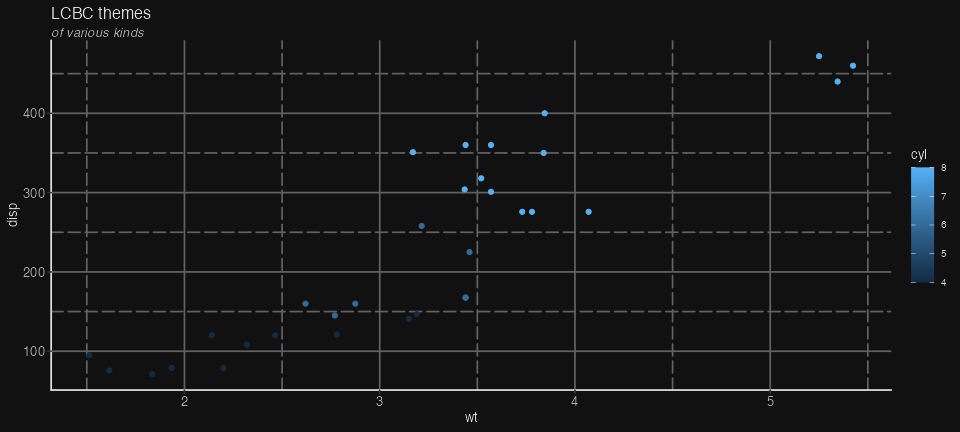
p + theme_lcbc_dark_void()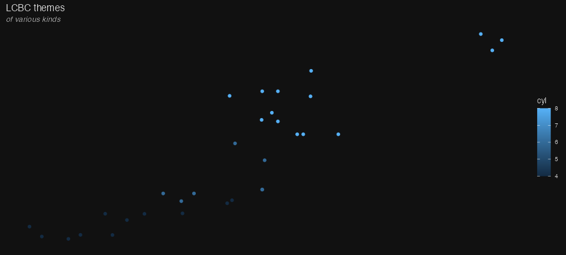
Colour scales
LCBC scales
The colour scales work much the same way as standard ggplot scales do. The main difference is you need to be aware if the data your are colouring is discrete (categorical) or continuous, to turn on or off the discrete argument.
p +
theme_lcbc() +
scale_colour_lcbc(discrete = FALSE) 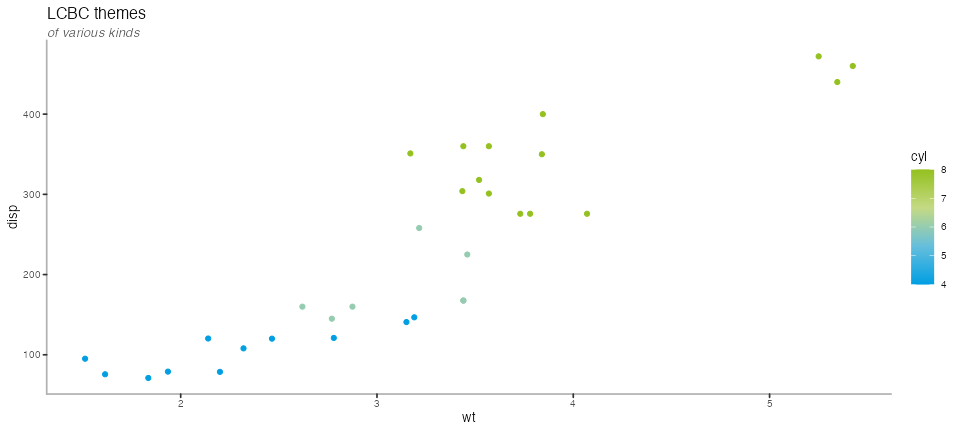
mtcars %>%
ggplot(aes(x = wt, y = disp, colour = factor(cyl))) +
geom_point() +
labs(title = "LCBC themes",
subtitle = "of various kinds") +
theme_lcbc() +
scale_colour_lcbc(discrete = TRUE) 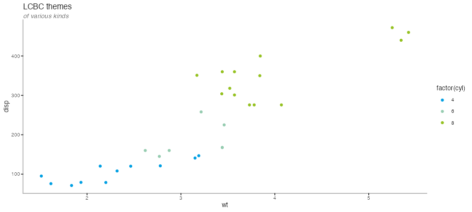
By default, the scales grab the “main” palette, which consists of the blue and green colours of our logo. There are also other variations
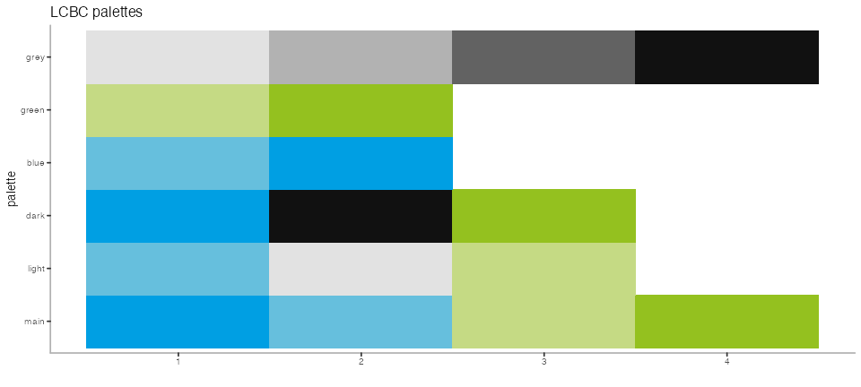
p +
theme_lcbc() +
scale_colour_lcbc("dark", discrete = FALSE) 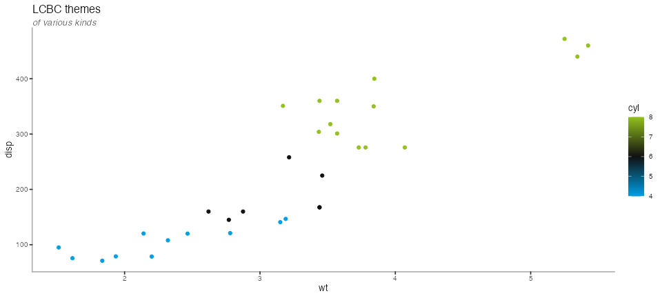
p +
theme_lcbc_dark() +
scale_colour_lcbc("light", discrete = FALSE) 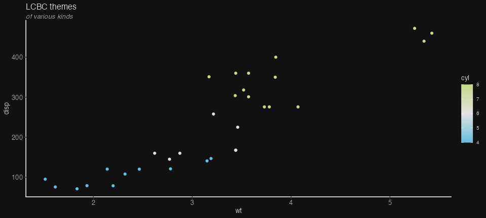
p +
theme_lcbc() +
scale_colour_lcbc("blue", discrete = FALSE) 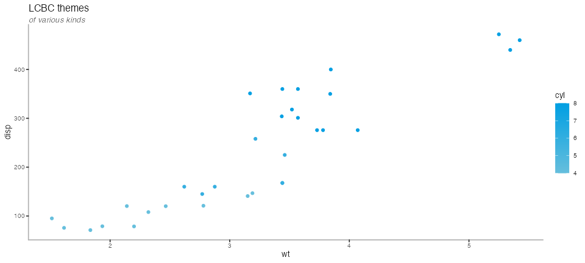
p +
theme_lcbc() +
scale_colour_lcbc("green", discrete = FALSE) 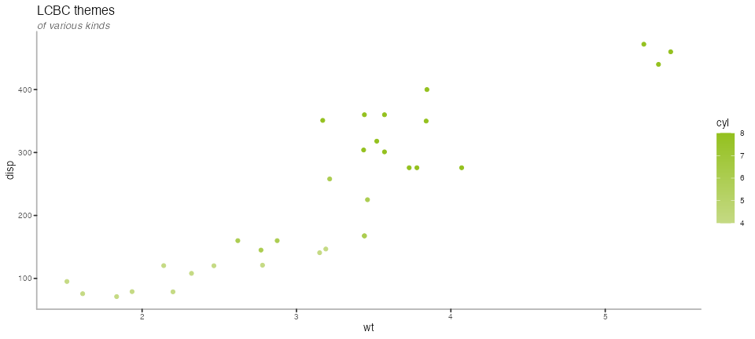
Adding logo to plots
Adding the LCBC logo to plots is a great way to brand images further, though should be used carefully, so it’s not too garish.
mtcars %>%
ggplot(aes(x = wt, y = disp, colour = cyl))+
geom_point() +
labs(title = "LCBC themes",
subtitle = "of various kinds") +
scale_colour_lcbc(discrete = FALSE) +
theme_lcbc() +
add_lcbc_logo("long", alpha=.5) 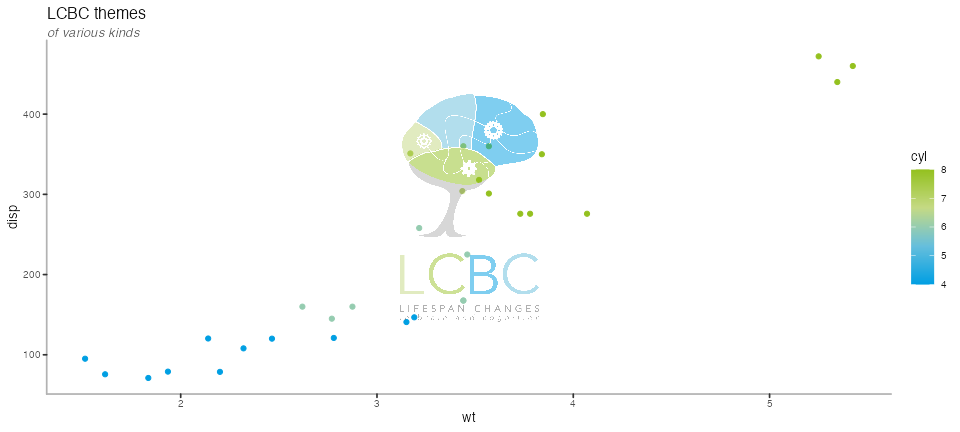
mtcars %>%
ggplot(aes(x = wt, y = disp, colour = cyl)) +
geom_point() +
labs(title = "LCBC themes",
subtitle = "of various kinds") +
scale_colour_lcbc(discrete = FALSE) +
theme_lcbc() +
add_lcbc_logo(alpha=.7) 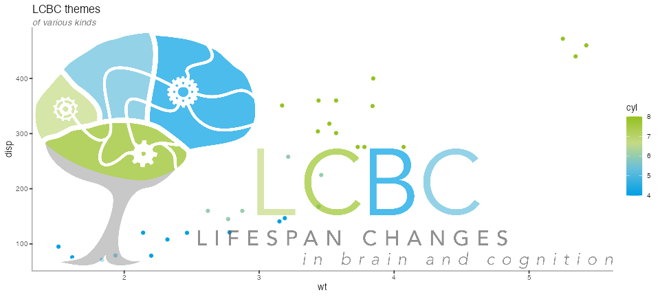
You can control the size and position of the logos by using the xmin, xmax, ymin, ymax parameters, defining where on the plot it is placed.
mtcars %>%
ggplot(aes(x = wt, y = disp, colour = cyl)) +
geom_point() +
labs(title = "LCBC themes",
subtitle = "of various kinds") +
scale_colour_lcbc(discrete = FALSE) +
theme_lcbc() +
add_lcbc_logo(alpha = .7,
xmin = 4.5, xmax = Inf,
ymin = 60 , ymax = 100
) 
mtcars %>%
ggplot(aes(x = wt, y = disp, colour = cyl)) +
geom_point() +
labs(title = "LCBC themes",
subtitle = "of various kinds") +
scale_colour_lcbc(discrete = FALSE) +
theme_lcbc() +
add_lcbc_logo(type = "brain",
alpha = .7,
xmin = 5, xmax = Inf,
ymin = 60 , ymax = 110
) 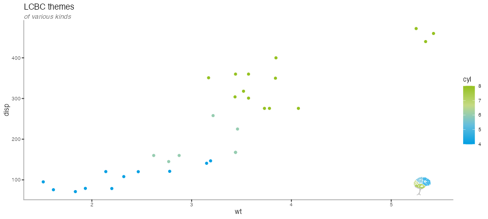
You can also add the logo outside the plot area, but that requires extra work, as ggplot automatically cuts away all datapoints that dont fit in the main plot area.
To coordinates can be found with some trial and error, here we want to place the logo at the bottom right. The plot y-axis starts at 50, and the x-axis ends at 5.5. SO here we specify that the logo should be placed below the y-axis and to the right of the x-axis, extending the main plot area beyong the data.
To keep whatever we place there, we need to tell ggplot to not clip anything outside the main plot out, turning clipping off with coord_cartesian.
After this, we need to tell ggplot to extend the plot to include the area we placed the logo. This is trial and error, changing the numbers in units changes how much the plot is extended to each of it’s four sides. 1 is no extention, and any number above or below that will increase or reduce the plotting area, respectively.
mtcars %>%
ggplot(aes(x = wt, y = disp, colour = cyl)) +
geom_point() +
labs(title = "LCBC themes",
subtitle = "of various kinds") +
scale_colour_lcbc(discrete = FALSE) +
theme_lcbc() +
add_lcbc_logo(alpha = 1,
xmin = 4.7, xmax = 6.7,
ymin = -10 , ymax = 30
) +
coord_cartesian(clip = "off") +
theme(plot.margin = unit(c(1, 2, 3, 1), "lines"))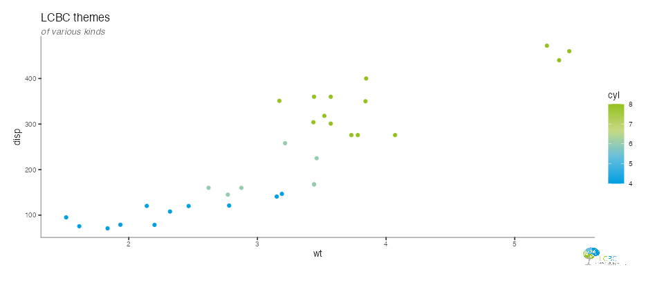